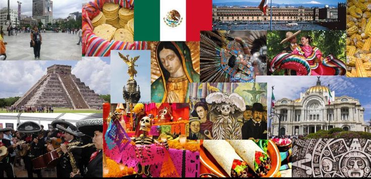

¿Que es la biodiversidad biocultural?
La diversidad biocultural se refiere a la interrelación entre la biodiversidad (plantas, animales, ecosistemas) y la diversidad cultural (lenguas, conocimientos, tradiciones). Esta conexión demuestra cómo las culturas humanas influyen y son influenciadas por el entorno natural. en mexico esta interaccion ha permitido la conservacion de ecocistemas unicos y la perservacion de tradiciones culturales
Importancia de la biodiversidad biocultural
- Conservacion: La diversidad biocultural promueve estrategias sostenibles para la conservacion de los recursos naturales.
- Identidad cultural: Mantiene viva la identidad y conocimiento cultural de las comunidades
Regiones bioculturales de mexico
Algunas de las principales regiones bioculturales de mexico son:
- Corredor biocultural del centro occidente: Abarca los estados de Nayarit, Zacatecas, Aguascalientes, San luis potosi, Guanajuato, Michoacan, Jalisco y Colima, caracterizado por una gran variedad de ecocistemas y especies endemicas.
- Sierra madre oriental: Reconocida por su diversidad de flora y fauna, asi como por su rica herencia cultural.
- Humedales de la costa de Chiapas: Con una impresionante biodiversidad y practicas agricolas ancestrales.
- Altiplano Mexicano: Incluye practicas ganaderas y agricolas que forman parte del patrimonio cultural de sus habitantes.
- Peninsula de Yucatan: Alberga sitios arqueologicos mayas y una rica biodiversidad tropical.
Patrimonio cultural
El patrimonio cultural asociado a estas regiones incluye:
- Tradiciones alimentarias: Metodos especificos de cultivo adaptados a las condiciones locales.
- Conocimientos medicinales: Uso de plantas nativas para medicina tradicional.
- Expresiones artisticas: Artesanias,danzas,musica y narraciones orales que representan la identidad cultural de las comunidades.
- Territorios sagrados: Espacios considerados sagrados vitales para la espiritualidad y cultura de los pueblos originarios.
Costumbres y tradiciones
Las costumbres y tradiciones son prácticas y hábitos que se transmiten de generación en generación, dando identidad a comunidades y pueblos. En México, por ejemplo, estas tradiciones han evolucionado a lo largo del tiempo, reflejando influencias de diversas culturas, como la indígena y la española. Las tradiciones se expresan a través de alimentos típicos, danzas, música y vestimentas, y son fundamentales para la identidad cultural de una región. Algunas de las tradiciones más importantes en México incluyen la celebración del Año Nuevo, el Día de los Reyes Magos y la Danza de los Parachicos.
